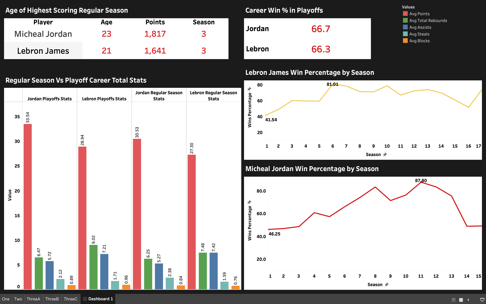
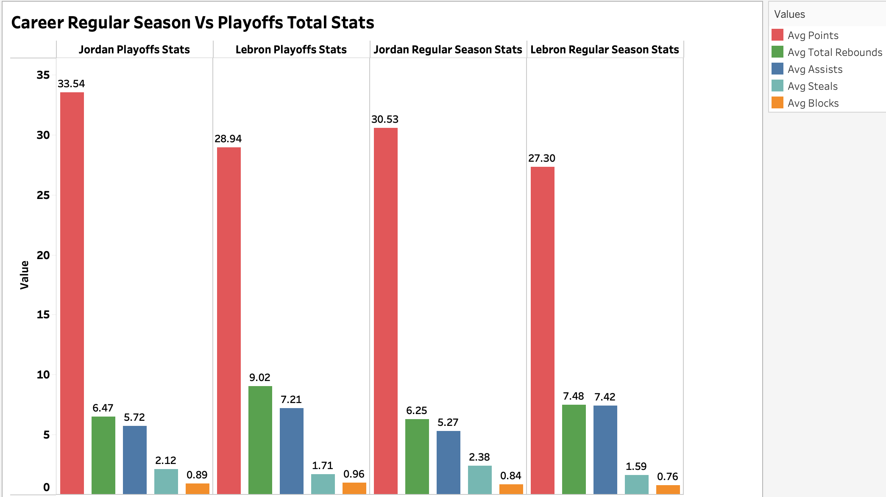
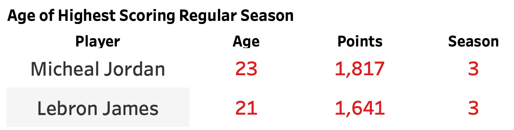
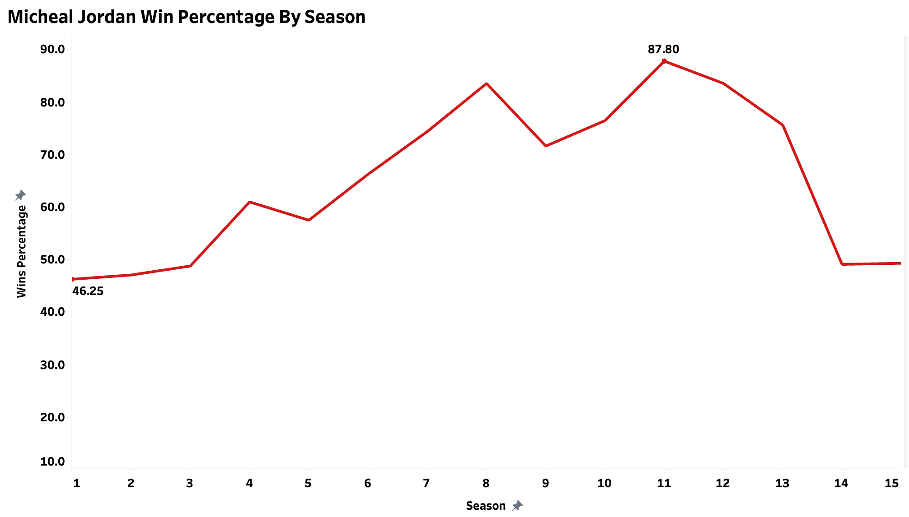
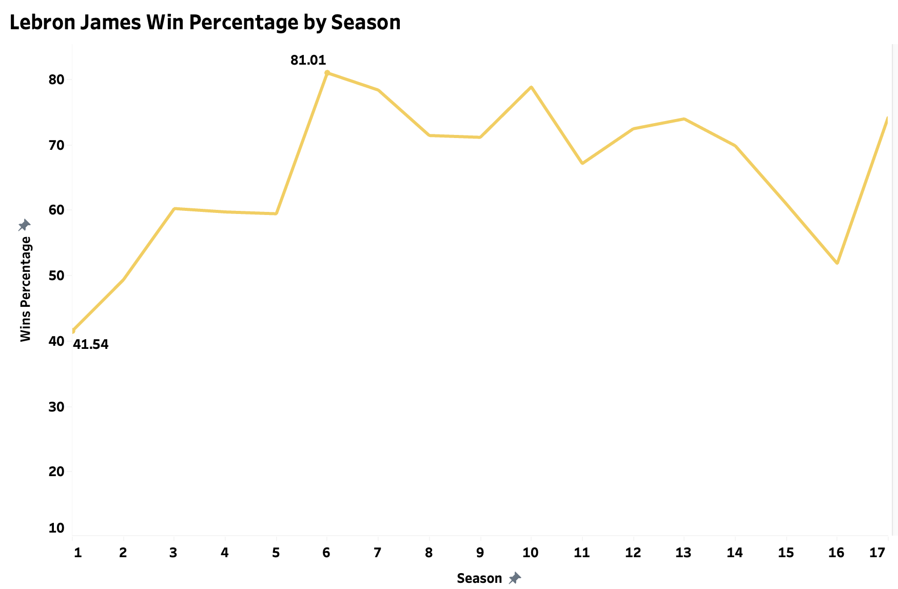
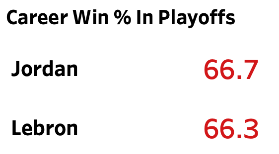

←
Lebron Vs Jordan Analysis
Presented by: Bladimir Nunez
Last Updated: April 5, 2024

Project Overview
Since Micheal Jordan's career ended everyone said he is the best
player of all time. Till Lebron James stepped in the NBA, now there
has been two sides of debate to who is the "Goat" of basketball. These
two players are the best in their craft and I wanted to analyze their
career statistics for the regular season as well as playoffs. In this
analysis I dove into their points per game, assists, rebounds, blocks
as well as their win percentages throughout their career. Of course
Micheal Jordan retired around the time Lebron came into the NBA and
Lebron is still currently playing. This data goes up to October 2020
for Lebron James so even though up to this point I dont have data for
the past four years, I am just analyzing Micheal Jordan from the start
to the end of his career which is 1984-2003 and Lebron James from the
start of his career which was 2003 up to October 2020. Questions I
will be answering in this analysis are:
1. How do their regular season per game and total stats compare? What
about their playoff stats?
2. At what age did each player have their highest scoring season?
3. How have their win percentages trended by season? Who has a better
win percentage in the playoffs?
Visit GitHub Code!
Visit Tableau Dashboard!
Exploratory Data Analysis (Data Visualization)
1. How do their regular season per game and total stats compare?
What about their playoff stats?

I use a side by side bar chart to be able to compare the diffrent
values in the dataset such as points, assists, total rebounds, blocks
and steals for both players careers in the regular season and
playoffs. Starting from the left in the graph I put Lebrons and
Jordans playoff stats together for comparision. We can see that Jordan
averages 33.5 points in playoffs compared to Lebrons 28. So far up to
2020 Lebron outperforms Jordan in the playoffs with total rebounds and
assists. Jordan achieves more steals in the playoffs compared to
Lebron but Lebron achieves more blocks. The same goes for the regular
season Jordan scores more points then Lebron while Lebron achieves
more rebounds and assists.
2. At what age did each player have their highest scoring
season?

I use a table here to visualize at what age did each player achieve
their highest points in a regular season. In both of their third
seasons in the NBA Micheal Jordan scored the most in his regular
season career at the age of 23 while Lebron scored his highest points
in a season at the age of 21.
3. How have their win percentages trended by season? Who has a
better win percentage in the playoffs?
Jordans Win Percentage Over Seasons Played:

A line chart is used here to see the progression of Micheal Jordans
win percentage each season he has played. I highlight the minimum win
percentage which was his first year and the highest winning season he
had was 87.8% during his 11th season. After his 5th season Micheal
Jordan stayed above a 60% win rate each season until the last 2
seasons of his career where he ended at around 50% win rate.
Lebrons Win Percentage Over Seasons Played:

Again a line chart is used to know analyze Lebron James win percentage
from the time he began in the NBA until 2020. I highlight his minimum
win rate which was at the start of his career at 41.5% and the maximum
win rate he has gained in this data which is 81% in his 6th season.
Starting from his 3rd season Lebron has stayed above 60% win rate
until his 15th and 16th season where it dropped to around 55%. In his
17th season in 2020 his win rate increased up to 74%.
Win Percentage In Playoffs:

In the playoffs for both players careers Micheal Jordan ups Lebron
with 66.7% win rate in the playoffs compared to Lebrons 66.3%. Seeing
this of course the margin is very low so this shows that both players
are positive in wins during the playoffs.
Insights
-
Micheal Jordan is more productive on offense then Lebron in terms of
points as well as steals on defense.
-
Lebron outperforms Jordan in rebounds and assists in both regular
season play and playoffs.
-
Up until 2020 Jordan has a higher career playoff win rate compared
to Lebron at 66.7%.
-
Due to Lebron playing longer then Jordan he has more seasons above
60% win rate throughout his career.
-
Jordan at age 23 in his third season scored 1,817 points which
marked his highest regular season in points.
-
Lebron at age 21 in his third season scored 1,641 points which
marked his highest regular season in points.
Data Sources
I used the Lebron vs Jordan data set from Maven Analytics which can be
found here under the sports category:
Dataset
Technologies Used
SQL: Data Analysis
Tableau: Data Visualization
Data Cleaning
- Round integers to 2 decimal places for readability
- Remove uneeded text in columns for cleaner analysis
-
Modify values in result column that contained 'W' and 'L' for wins
and losses to 'won' and 'loss' for easier understanding of data
Feature Engineering
My data had the dates for the games played but there was no data about
which season it was played in for each player. I used the date column
to then be able to create a new column called season that contained
the season in which a particular game was played. Doing this helped
with analysis and be able to distinct stats in each season for both
players.
Challenges
To make my visualizations more neat and using less space I wanted to
use dual lines in a line chart that showed the win percentage
progression of both Jordan and Lebron in one. From my SQL analysis I
used 2 queries for each players trend. I did not end up solving how to
connect both CSV files to then show the players data on one chart. To
solve this I will research more about Tableau to be able to create
this visual in future projects.